Rename リネーム
- バージョン：V2R2
- ステータス：OK
- 日付：2025/01/20
- コミット：xxx
Rename モジュールは Decode モジュールから命令デコード情報を受け取り、デコード情報に基づいて命令に robIdx と物理レジスタを割り当て、オペランドを介して対応する物理レジスタを検索します。同時に、このモジュールは命令デコード情報、命令コミット情報、および RenameTable からのレジスタ解放情報に基づいて freeList の状態を維持し、命令デコード情報と命令コミット情報に基づいて RenameTable に書き込み要求を送信して、投機的実行時のレジスタマッピング状態を更新します。さらに、このモジュールは ROB からのリダイレクト要求も処理し、リダイレクト情報に基づいて freeList の状態を再更新します。リネームが完了すると、Rename はリネームされた命令情報を Dispatch モジュールに送信します。
基本機能
論理レジスタを物理レジスタにマッピングし、命令内の各論理レジスタに物理レジスタを割り当てます。
レジスタリネームは、リネーム関連のテーブルまたはポインタを維持します。論理レジスタから物理レジスタへのマッピングテーブルを維持し、各論理レジスタに対応する最近割り当てられた物理レジスタ番号を記録します。
整数、浮動小数点、およびベクトルレジスタに対して、それぞれ 224、192、および 128 項目の物理レジスタ状態テーブルを維持し、物理レジスタの状態を記録し、割り当てられているかどうかを記録します。空き物理レジスタ割り当てポインタを使用して、割り当てられていない物理レジスタを記録します。
コミットされた論理レジスタに対応する物理レジスタのマッピングテーブル（RenameTable, RAT）を維持し、コミット状態の論理レジスタと物理レジスタのマッピング関係を記録します。
コミット状態の空き物理レジスタ割り当てポインタを維持します。レジスタリネーム技術は、命令間のレジスタ読み取り後書き込み（WAR）および書き込み後書き込み（WAW）の依存関係を解消し、命令実行中に例外が発生したり、分岐命令の推測が誤って後続の命令がキャンセルされたりした場合に、コンテキストの正確性を保証します。
リネーム入力
- デコード段階からの入力（途中で FusionDecoder が DecodeStage から出力された命令に対してマクロ操作の融合と変更を行い、隣接する命令の組み合わせの種類に応じて valid、uop などの情報を変更し、また、隣接する命令の ftqptr と ftqoffset の異なる組み合わせに応じて、この融合された命令のコミットタイプ CommitType を変更します）
- RAT からの投機的リネームデータの返却を受け入れます
- 命令融合情報、および命令融合の状況に応じたデコード入力命令ストリームの変更
- ssit、waittable 情報
- Ctrlblock スナップショット制御情報およびキューの出入りポインタ
- rab コミット情報
リネーム出力
- rat へ：リネーム情報を書き込みます。
- dispatch へ：dispatch recv が有効な場合、リネーム後の uop 情報をパイプライン出力します。
- snapshot へ：enqdata、スナップショットの生成を許可します。
整数物理レジスタの割り当て
Decode モジュールから有効な整数命令デコード情報を受け取った後、Rename モジュールは io_in_[0-5]bits_rfWen 信号と io_in[0-5]_bits_ldest 信号に基づいて、新しい整数物理レジスタを割り当てる必要があるかどうかを判断します。rfWen がハイレベルで ldest が 0 でない場合、新しい整数物理レジスタを割り当てる必要があります。新しい整数物理レジスタを割り当てる必要がある場合、intFreeList に割り当て要求を送信し、そのサイクルで割り当て結果を取得します。それ以外の場合は、割り当て要求を送信しません。また、Rename モジュールは整数の Move 命令の削除をサポートしています。デコードされた命令が整数の Move 命令であると検出された場合も、新しい整数物理レジスタは割り当てられません。
浮動小数点またはベクトル物理レジスタの割り当て
Decode モジュールから有効なベクトル浮動小数点命令デコード情報を受け取った後、Rename モジュールは io_in_[0-5]bits_fpWen および io_in[0-5]_bits_vecWen 信号に基づいて、新しいベクトル浮動小数点物理レジスタを割り当てる必要があるかどうかを判断します。fpWen または vecWen 信号がハイレベルの場合、新しい浮動小数点またはベクトル物理レジスタを割り当てる必要があります。新しい浮動小数点またはベクトル物理レジスタを割り当てる必要がある場合、fpFreeList または vecFreeList に割り当て要求を送信し、そのサイクルで割り当て結果を取得します。それ以外の場合は、割り当て要求を送信しません。
ソースオペランドの物理レジスタ（psrc）の設定
Decode モジュールから渡される命令デコード情報に整数レジスタまたはベクトル浮動小数点レジスタ型のソースオペランドがある場合、通常、Decode モジュールは 1 サイクル前に RenameTable に論理レジスタに対応する物理レジスタを問い合わせ、1 サイクル後に Rename モジュールで投機的リネームテーブルの読み取り結果を取得し、その結果を io_out_[0-5]bits_psrc[0-4] を介して Dispatch モジュールに渡します。例外として、前の命令のデスティネーションオペランドと現在の命令のソースオペランドが同じ場合、現在の命令の psrc は前の命令の pdest に設定されるべきです。
デスティネーションオペランドの物理レジスタ（pdest）の設定
Decode モジュールから渡される命令デコード情報にデスティネーションオペランドが存在することが示されている場合（ および を参照）、通常、Rename モジュールは io_out_[0-5]_bits_pdest を介して新しく割り当てられた物理レジスタを Dispatch モジュールに渡します。例外として、その命令が整数の Move 命令である場合、この命令の pdest はこの命令の psrc に設定されるべきです。
整数命令のコミット
整数命令がコミットされると、Rename は RenameTableWrapper から渡される io_int_need_free_[0-5] および io_int_old_pdest_[0-5] 情報に基づいて intFreeList に free 信号を送信し、対応する整数物理レジスタを解放して新しい命令が使用できるようにします。io_int_need_free_[0-5] がハイレベルの場合、対応するチャネルの io_int_old_pdest_[0-5] 整数物理レジスタを解放する必要があることを示します。さらに、Rename は RAB から送られてくる commit 信号を intFreeList に送信し、アーキテクチャ状態リネームポインタの維持に使用させます。
浮動小数点またはベクトル命令のコミット
RAB から浮動小数点命令のコミット情報が渡されると、Rename は RAB と RenameTableWrapper から渡されるコミット情報を組み合わせて fpFreeList に free 信号を送信し、使用されなくなったベクトル浮動小数点物理レジスタを解放して新しい命令が使用できるようにします。RAB から渡される io_rabCommits_info_[0-5]fp/vecWen 信号が 1 サイクル遅延され、1 サイクル遅延された io_rabCommits_isCommit および io_rabCommits_commitValid[0-5] 信号（これらの信号は、そのサイクルがコミット状態にあり、そのチャネルのコミット信号が有効であることを示します。詳細は を参照）とともにすべてハイレベルである場合、対応するチャネルの io_fp/vec_old_pdest_[0-5] 浮動小数点またはベクトルレジスタを解放する必要があることを示します。さらに、Rename は RAB から送られてくる commit 信号を fpFreeList に送信し、アーキテクチャ状態リネームポインタの維持に使用させます。
リダイレクト
io_redirect ポートからリダイレクト信号が入力されると、freeList は物理レジスタの割り当てを一時停止し、freeList の物理レジスタ割り当てポインタをアーキテクチャ状態または某个スナップショットの状態に復元します。さらに、Rename モジュールは RenameTable に書き込み要求信号を送信しなくなります。
再リネーム
リダイレクト信号が入力されてから 1 サイクル後、Rename モジュールは再リネームプロセスに入ります。再リネーム信号は RAB から io_rabCommits ポートを介して入力されます。再リネーム時、Rename モジュールは Dispatch に有効な命令信号を出力しなくなり、RenameTable に書き込み要求信号も送信しなくなります。
Rename モジュールは、intFreeList、fpFreeList、および vecFreeList に、それぞれの io_walkReq_[0-5] ポートを介して再リネーム信号を送信します。これらの再リネーム信号は、RAB モジュールからの io_rabCommits_walkValid_[0-5]、io_rabCommits_info_[0-5]isMove、io_rabCommits_info[0-5]ldest、および io_rabCommits_info[0-5]rf/fp/vecWen 信号です。io_rabCommits_isWalk がハイレベルの場合にのみ、io_walkReq[0-5] に入力される信号は有効です。
intFreeList の場合、io_rabCommits_walkValid_[0-5] がハイレベルで、対応するチャネルの io_rabCommits_info_[0-5]rfWen がハイレベル、io_rabCommits_info[0-5]ldest が 0 でなく、かつ io_rabCommits_info[0-5]isMove がローレベルの場合、対応する io_walkReq[0-5] ポートに有効信号が送信され、再リネームが必要であることを意味します。
fpFreeList および vecFreeList の場合、io_rabCommits_walkValid_[0-5] がハイレベルで、対応するチャネルの io_rabCommits_info_[0-5]fp/vecWen 信号がハイレベルの場合、対応する io_walkReq[0-5] ポートに有効信号が送信され、再リネームが必要であることを意味します。
robIdx の割り当て
Rename モジュールは、各マイクロ命令に robIdx を割り当てる責任があります。このモジュール内部では robIdxHead を維持しています。通常、Rename モジュールは Decode から渡されたデコード後の命令に連続した robIdx を順次割り当て、robIdxHead をインクリメントしますが、対応するチャネルの io_in_[0-5]bits_lastUop がローレベルであるか、または compressUnit から出力される対応するチャネルの io_out_needRobFlags[0-5] がローレベルである場合、次のチャネルのマイクロ命令には robIdx が割り当てられません。
リダイレクトが発生したサイクルでは、このモジュールは robIdxHead をリダイレクトの robIdx にリセットし、次のサイクルで io_redirect_bits_level の値に基づいて robIdxHead をインクリメントするかどうかを決定します。
リネームスナップショットの生成決定
Rename モジュールは、リネームスナップショットを生成するかどうかも決定します。リネームスナップショットは、リダイレクトが発生した後に再リネームの時間を短縮することを目的としています。リネームスナップショットは分散しており、RenameTable、RenameTable_1、RenameTable_2、intFreeList、fpFreeList、vecFreeList、Rob、Rab、CtrlBlock など多くのモジュールに分布しており、スナップショットに保存される内容もそれぞれ異なります。そのため、どのモジュールがいつスナップショットを生成するかを指示するモジュールが必要であり、そのモジュールが Rename です。外部に対して、Rename はスナップショット生成信号を io_out_*_bits_snapshot を介して他のモジュールに伝達します。内部に対して、Rename はスナップショット生成信号を intFreeList、fpFreeList、vecFreeList にも伝達します。
リネームスナップショットの生成には多くの制限があります。まず、Rename モジュール内部にはスナップショットカウンタ snapshotCtr があり、このカウンタが 0 のときにのみスナップショットを生成できます。次に、現在他にスナップショットが存在する場合、このサイクルでリネームされる最初のマイクロ命令に割り当てられる robIdx は、最後に生成されたスナップショットの robIdx と 6 以上、つまり ROB のコミット幅以上離れている必要があります。最後に、このサイクルでリネームされる最初のマイクロ命令は、それが属する命令の最初のマイクロ命令でなければなりません。つまり、io_in_0_bits_firstUop はハイレベルでなければなりません。これらの 3 つの条件をすべて満たし、かつリネームされる 6 つのマイクロ命令の中に分岐ジャンプ命令が存在する場合にのみ、スナップショットが生成されます。このとき、分岐ジャンプ命令であるチャネルの io_out_*_bits_snapshot 信号がハイレベルになり、Rename はスナップショット生成信号を内部のサブモジュールに伝えます。
スナップショットカウンタ snapshotCtr は、スナップショットの生成間隔を制御するカウンタです。近すぎるスナップショットは意味がなく、スナップショットリソースの無駄遣いになるため、このようなカウンタが実装されています。snapshotCtr の初期値は RAB のコミット幅の 4 倍、つまり 4×8=32 に設定されています。現在有効なリネームスナップショットが存在しない場合、snapshotCtr は 0 に設定されます。そうでない場合、n 個のマイクロ命令がリネームされるごとに snapshotCtr は n だけデクリメントされ、0 になるまで続きます。snapshotCtr が 0 になった後、ある時点でリネームスナップショットが生成されると、snapshotCtr は最大値からそのサイクルでリネームされたマイクロ命令数を引いた値、つまり 32-PopCount(io_out_valid && io_out_ready) にリセットされます。
全体ブロック図
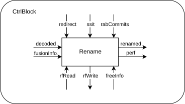
インターフェースタイミング
Decode 入力インターフェースタイミング概略図
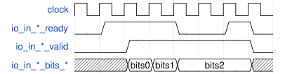
此图 は、decode からの 3 つのデコード結果入力例を示しています。ready と valid 信号が同時にハイのとき、対応する bits が Rename モジュールに受け取られます。
Rename 出力インターフェースタイミング概略図
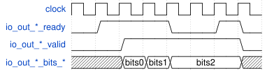
此图 は、3 つのリネーム結果の例を示しています。ready と valid 信号が同時にハイのとき、対応する bits が Rename モジュールから Dispatch に送信されます。
命令コミットロジックタイミング概略図
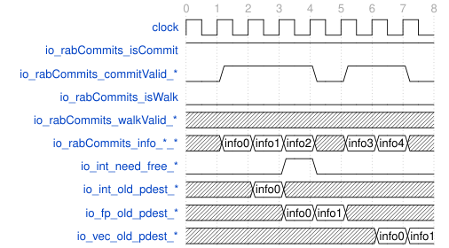
此图 は、ROB からの 5 つの命令コミット入力を示しています。io_rabCommits_isCommit がハイで io_rabCommits_isWalk がローの場合、io_rabCommits_info__ は命令コミット情報です。io_rabCommits_commitValid_ がハイの場合、対応する io_rabCommits_info_ は有効な命令コミット情報を Rename モジュールに渡します。同時に、io__old_pdest は 1 サイクル遅延して、解放する必要のある古い物理レジスタ番号を Rename モジュールに渡し、さらに 1 サイクル遅延して、整数物理レジスタを解放する必要があるかどうかを io_int_need_free_ ポートを介して Rename モジュールに渡します。
リダイレクトと再リネームのタイミング概略図
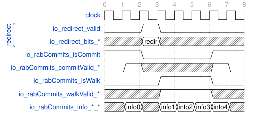
此图 は、リダイレクト発生前後の関連信号を示しています。最初の 2 サイクルでは、io_redirect_valid はローレベルで、Rename は通常動作状態にあり、此图 と同じです。その後、io_redirect_valid 信号が 1 サイクルハイになり、リダイレクトが到着し、リダイレクトの関連情報が io_redirect_bits_ から送られ、Rename は次のサイクルから再リネーム動作状態に入ります。その後の 3 サイクルでは、io_rabCommits_isCommit はローレベルになり、io_rabCommits_info_ はもはやコミット情報を送信しません。それに対して、io_rabCommits_isWalk はハイレベルになり、io_rabCommits_info_ が再リネーム情報を送信することを示し、Rename は再リネーム作業を行う必要があります。io_rabCommits_walkValid_ がハイの場合、対応する io_rabCommits_info__ から送られる再リネーム情報は有効です。
RenameTableWrapper
RenameTableWrapper は、内部に整数リネームテーブル RenameTable モジュール、浮動小数点リネームテーブル RenameTable_1 モジュール、およびベクトルリネームテーブル RenameTable_2 モジュールを含むラッパーモジュールです。このラッパーモジュールは、3 つのリネームテーブルを単純にパッケージ化するだけでなく、内部でコミットと再リネームに関連するロジックを処理します。RenameTableWrapper は、内部のリネームテーブルと外部モジュールとの間の橋渡し役を果たします。
投機的リネームテーブルの読み取り
RenameTableWrapper には、合計 12 個の整数レジスタ読み取りポート、18 個の浮動小数点レジスタ読み取りポート、および 30 個のベクトル浮動小数点レジスタ読み取りポートがあります。整数レジスタ読み取りポートは 2 個で 1 グループ、浮動小数点レジスタ読み取りポートは 3 個で 1 グループ、ベクトルレジスタ読み取りポートは 5 個で 1 グループで、それぞれ 6 グループの読み取りポートがあります。整数レジスタ読み取りポートは、整数論理レジスタから整数物理レジスタへの投機的マッピング関係を読み取るために使用されます。浮動小数点レジスタ読み取りポートは、浮動小数点論理レジスタからベクトル浮動小数点物理レジスタへの投機的マッピング関係を読み取るために使用されます。ベクトルレジスタ読み取りポートは、ベクトル論理レジスタからベクトル浮動小数点物理レジスタへの投機的マッピング関係を読み取るために使用されます。
RenameTableWrapper の読み取りは同期的です。これは、T 番目のクロックサイクルで io_(int/fp/vec)ReadPorts__addr を介して送信された読み取り要求は、T+1 番目のクロックサイクルで io(int/fp/vec)ReadPorts___data から T 番目のクロックサイクルに対応する論理レジスタの物理レジスタを取得することを意味します。
RenameTableWrapper の読み取りにはフォワーディング機能があります。T 番目のクロックサイクルであるアドレスに読み取り要求を送信すると同時に、あるアドレスに書き込み要求を送信した場合、T+1 番目のクロックサイクルでは、T 番目のクロックサイクルであるアドレスに書き込まれた値を読み取ります。
RenameTableWrapper の読み取りには保持機能があります。T 番目のクロックサイクルで、ある読み取りポートの io_(int/fp/vec)ReadPorts___hold がハイレベルの場合、T+1 番目のクロックサイクルで読み取られる値は、T 番目のクロックサイクルで読み取られた値と同じになります。
リネーム段階での投機的リネームテーブルへの書き込み
RenameTableWrapper には、合計 6 個の整数レジスタ書き込みポート、6 個の浮動小数点レジスタ書き込みポート、および 6 個のベクトルレジスタ書き込みポートがあり、これらのポートはリネーム段階で投機的リネームテーブルに書き込むために使用されます。整数レジスタ書き込みポートは、リネーム段階で整数論理レジスタから整数物理レジスタへの投機的マッピング関係を更新するために使用されます。浮動小数点レジスタ書き込みポートは、リネーム段階で浮動小数点論理レジスタからベクトル浮動小数点物理レジスタへの投機的マッピング関係を更新するために使用されます。ベクトルレジスタ書き込みポートは、リネーム段階でベクトル論理レジスタからベクトル浮動小数点物理レジスタへの投機的マッピング関係を更新するために使用されます。
RenameTableWrapper の書き込みは同期的です。これは、T 番目のクロックサイクルで io_(int/fp/vec)RenamePorts_addr と io(int/fp/vec)RenamePorts__data を介して送信された書き込み要求は、T+1 番目のクロックサイクルで読み出されることを意味します。
RenameTableWrapper の書き込みにはイネーブルがあります。io_(int/fp/vec)RenamePorts_*_wen がハイの書き込み要求のみが有効です。
RenameTableWrapper の書き込みには優先順位があります。書き込みチャネルの番号が大きいほど優先順位が高くなります。つまり、2 つのチャネルが同じアドレスに書き込む場合、最終的に書き込まれる結果は番号の大きい方のチャネルの結果になります。
コミット段階でのアーキテクチャリネームテーブルへの書き込み
RenameTableWrapper は、RAB からの commit 情報を監視して、アーキテクチャリネームテーブルを更新します。あるサイクルの io_rabCommits_isCommit 信号がハイレベルの場合、そのサイクルがコミット中であることを示します。このとき、ある io_rabCommits_commitValid_ 信号がハイレベルの場合、そのポートのコミット信号が有効であることを示します。このとき、さらに io_rabCommits_info_rfWen、io_rabCommits_infofpWen、および io_rabCommits_infovecWen を調べる必要があります。io_rabCommits_inforfWen がハイレベルの場合、整数レジスタがアーキテクチャリネームテーブルを更新する必要があることを示します。io_rabCommits_infofpWen がハイレベルの場合、浮動小数点レジスタがアーキテクチャリネームテーブルを更新する必要があることを示します。io_rabCommits_infovecWen がハイレベルの場合、ベクトルレジスタがアーキテクチャリネームテーブルを更新する必要があることを示します。これらの 3 つのいずれかの場合、RenameTableWrapper は、整数、浮動小数点、またはベクトルのアーキテクチャリネームテーブルのアドレス io_rabCommits_infoldest の項目を io_rabCommits_info*_pdest に変更します。
コミット段階での物理レジスタ解放情報の提供
RenameTableWrapper は、コミット段階でのアーキテクチャリネームテーブルへの書き込み状況に基づいて、物理レジスタの解放情報を提供します。この情報には、解放する整数物理レジスタ番号 io_int_old_pdest_ と対応する有効信号 io_int_need_free_、および解放するベクトル浮動小数点物理レジスタ番号 io_(fp/vec)old_pdest* が含まれます。これらの信号は RenameTableWrapper のサブモジュールから直接送られ、Rename モジュールで命令コミットの状況と組み合わせて物理レジスタの解放が行われます。
再リネーム段階での投機的リネームテーブルへの書き込み
RenameTableWrapper は、RAB からの commit 情報を監視して再リネームを行います。あるサイクルの io_rabCommits_isWalk 信号がハイレベルの場合、そのサイクルが再リネーム中であることを示します。このとき、ある io_rabCommits_walkValid_ 信号がハイレベルの場合、そのポートの再リネーム信号が有効であることを示します。このとき、さらに io_rabCommits_info_rfWen、io_rabCommits_infofpWen、および io_rabCommits_infovecWen を調べる必要があります。io_rabCommits_inforfWen がハイレベルの場合、整数レジスタが再リネームする必要があることを示します。io_rabCommits_infofpWen がハイレベルの場合、浮動小数点レジスタが再リネームする必要があることを示します。io_rabCommits_infovecWen がハイレベルの場合、ベクトルレジスタが再リネームする必要があることを示します。これらの 3 つのいずれかの場合、RenameTableWrapper は、整数、浮動小数点、またはベクトルの投機的リネームテーブルのアドレス io_rabCommits_infoldest の項目を io_rabCommits_info*_pdest に変更します。
リネームスナップショットの維持
RenameTableWrapper は、外部からのリネームスナップショット信号 io_snpt_* を各サブモジュールに渡し、リネームスナップショットの生成、解放、フラッシュ、および使用に使用します。
全体ブロック図
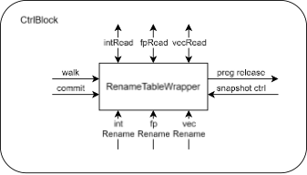
インターフェースタイミング
整数読み書きインターフェースタイミング概略図（浮動小数点ベクトルも同様）
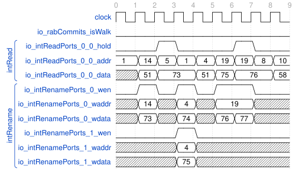
此图 は、整数の読み書きのインターフェースタイミングを示しています。
時刻 2 で、io_intRenamePorts_0 はアドレス 14 に 73 を書き込みました。同時に、io_intReadPorts_0_0 もアドレス 14 に読み取り要求を発行したため、時刻 3 で時刻 2 に書き込まれた 73 が読み取られました。
時刻 4 で、io_intRenamePorts_0 はアドレス 4 に 74 を書き込み、io_intRenamePorts_1 もアドレス 4 に 75 を書き込みました。そのため、io_intReadPorts_0_0 が時刻 5 でアドレス 4 に読み取り要求を発行した後、時刻 6 で io_intRenamePorts_1 が書き込んだ 75 が読み取られました。
時刻 3 と時刻 7 で、io_intReadPorts_0_0_hold はハイレベルであるため、時刻 4 で読み出された値は時刻 3 で読み出された値と同じ 73 であり、アドレス 5 の値ではありません。同様に、時刻 8 で読み出された値は時刻 7 で読み出された値と同じ 76 であり、時刻 7 で新しく書き込まれた値 77 ではありません。
再リネームとコミットのインターフェースタイミング概略図
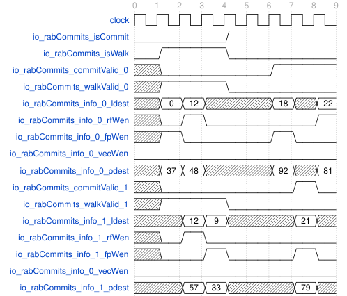
此图 は、2 つの再リネームとコミットのインターフェースのタイミングを示しています。
時刻 1 から時刻 4 まで、io_rabCommits_isWalk 信号はハイ、io_rabCommits_ioCommit 信号はローで、このときは再リネーム状態です。時刻 2 で、io_rabCommits_walkValid_0 はハイ、io_rabCommits_info_0_rfWen はロー、io_rabCommits_info_0_fpWen はハイで、再リネームインターフェース 0 は 37 を浮動小数点投機的リネームテーブルのアドレス 0 に書き込みます。時刻 3 で、2 つの再リネームインターフェースは両方とも 12 番の論理整数レジスタに値を書き込みました。このとき、1 番インターフェースは 0 番インターフェースよりも優先度が高いため、57 が実際に整数投機的リネームテーブルのアドレス 12 に書き込まれます。
時刻 5 から時刻 9 まで、io_rabCommits_isWalk 信号はロー、io_rabCommits_ioCommit 信号はハイで、このときはコミット状態です。時刻 7 で、io_rabCommits_commitValid_0 はハイ、io_rabCommits_info_0_rfWen はロー、io_rabCommits_info_0_fpWen はハイで、コミットインターフェース 0 は 92 を浮動小数点アーキテクチャリネームテーブルのアドレス 18 に書き込みます。
move 削除をサポートする RenameTable
move 削除をサポートする RenameTable は、整数レジスタのリネームテーブルに使用され、モジュール名は RenameTable で、論理整数レジスタと物理整数レジスタのマッピング関係を維持します。12 個の読み取り投機的リネームテーブルポート、6 個の書き込み投機的リネームテーブルポート、および 6 個の書き込みアーキテクチャリネームテーブルポートがあり、内部では 32 個の幅 8 のレジスタによって実際にマッピング関係が維持されます。読み取りポートと書き込みポートの動作は、RenameTableWrapper で説明されている動作と完全に同じです。注意すべき点として、タイミングを考慮して、モジュールの T0 時刻の書き込み投機的リネームテーブル要求は実際には T1 時刻に処理され、T0 時刻の書き込み投機的リネームテーブルデータは T1 時刻の読み取り投機的リネームテーブル結果にバイパスされます。
次に、モジュール内部には、リダイレクトと再リネーム時の高速回復のための 4 つの投機的リネームテーブルスナップショットがあります。これらのスナップショットは、サブモジュール SnapShotGenerator_3 に保存されており、RenameTable での名前は snapshots_snapshotGen_io_snapshots_0/1/2/3[0-31] です。スナップショットの生成、解放、使用、およびフラッシュは、外部信号 io_redirect および io_snpt_* によって完全に制御されます。
外部から渡されるリダイレクト信号 io_redirect とスナップショット制御信号 io_snpt_ は、1 サイクル遅延して t1_redirect と t1_snap_ 信号になります。リダイレクト信号 t1_redirect がハイレベルの場合、t1_snpt_useSnpt 信号がハイレベルかどうかをチェックします。t1_snpt_useSnpt 信号がローレベルの場合、投機的リネームテーブルをアーキテクチャリネームテーブルに設定します。t1_snpt_useSnpt がハイレベルの場合、投機的リネームテーブルを snapshots_snapshotGen_io_snapshots[t1_snpt_snptSelect]_[0-31] に設定します。
さらに、モジュールは、書き込みアーキテクチャリネームテーブルポートと内部のアーキテクチャリネームテーブルに基づいて、物理レジスタ解放信号を出力します。書き込みアーキテクチャリネームテーブルチャネルの書き込みイネーブル信号 io_archWritePorts_n_wen がローレベルの場合、次のサイクルの io_old_pdest_n は 0 になります。書き込みイネーブル信号がゼロでない場合、次のサイクルの io_old_pdest_n は、そのサイクルの arch_table[io_archWritePorts_n_addr] になります。追加の注意点として、io_old_pdest_n にはバイパスがあります。n>0 の場合、n より小さい番号のチャネルがアーキテクチャリネームテーブルの同じ論理レジスタに値を書き込んだ場合、次のサイクルの io_old_pdest_n は、arch_table[io_archWritePorts_n_addr] ではなく、この値に設定されるべきです。例えば、0<j
物理レジスタ解放信号には、io_need_free_ 信号も含まれます。そのサイクルのあるチャネルの io_old_pdest_n 信号が arch_table_ のどの項目とも異なる場合、そのチャネルの次のサイクルの io_need_free_n 信号をハイに設定します。追加の注意点として、n>0 の場合、n より小さい番号のチャネルの io_old_pdest_j 信号が io_old_pdest_n と同じ場合、次のサイクルの io_need_free_n 信号はハイに設定されません。
全体ブロック図
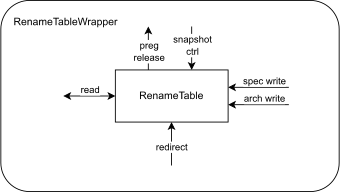
インターフェースタイミング
読み書きインターフェースタイミング概略図
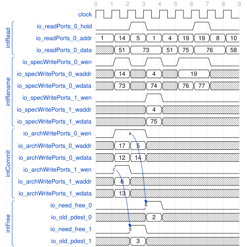
move 削除をサポートしない RenameTable
move 削除をサポートしない RenameTable は とほぼ同じですが、io_need_free_* 信号は含まれません。浮動小数点レジスタのリネームテーブル RenameTable_1 とベクトルレジスタのリネームテーブル RenameTable_2 は、このタイプのリネームテーブルを使用します。
浮動小数点レジスタのリネームテーブル RenameTable_1 は、論理浮動小数点レジスタと物理ベクトル浮動小数点レジスタのマッピング関係を維持します。18 個の読み取り投機的リネームテーブルポート、6 個の書き込み投機的リネームテーブルポート、および 6 個の書き込みアーキテクチャリネームテーブルポートがあり、内部では 34 個の幅 8 のレジスタによって実際にマッピング関係が維持されます。
浮動小数点レジスタのリネームテーブル RenameTable_2 は、論理ベクトルレジスタと物理ベクトル浮動小数点レジスタのマッピング関係を維持します。30 個の読み取り投機的リネームテーブルポート、6 個の書き込み投機的リネームテーブルポート、および 6 個の書き込みアーキテクチャリネームテーブルポートがあり、内部では 48 個の幅 8 のレジスタによって実際にマッピング関係が維持されます。
インターフェースタイミング
読み書きインターフェースタイミング概略図
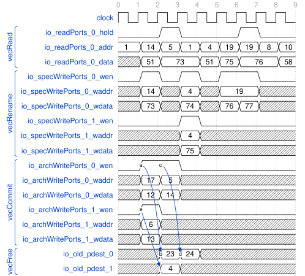
StdFreeList
StdFreeList は Rename モジュールで fpFreeList および vecFreeList としてインスタンス化されます。、、および で述べたように、fpFreelist はリネーム時にベクトル浮動小数点物理レジスタの割り当て要求を受け取り、割り当てられた空きベクトル浮動小数点物理レジスタを返します。再リネーム時には RAB から渡される再リネーム要求に基づいてベクトル浮動小数点物理レジスタを再割り当てします。コミット時には、もはや使用されなくなったベクトル浮動小数点物理レジスタを解放し、アーキテクチャのデキューポインタを更新します。
全体ブロック図
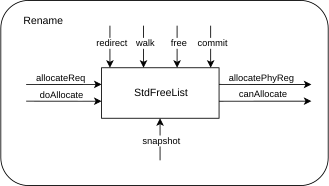
インターフェースタイミング
空きレジスタ割り当てタイミング概略図
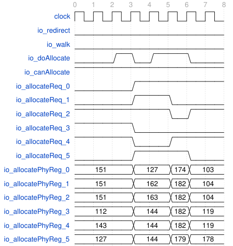
此图 は、空き物理レジスタ割り当てのタイミングを示しています。時刻 3、時刻 5、および時刻 6 で、io_redirect と io_walk はローレベル、io_doAllocate と io_canAllocate はハイレベルであり、空き物理レジスタの割り当てが行われました。時刻 3 で、io_allocateReq_[2-4] はハイレベルであり、StdFreeList は io_allocatePhyReg_[2-4] を介してそれぞれ割り当てられた空き物理レジスタ番号 151、112、および 143 を返しました。時刻 5 では、io_allocatePhyReg_[0-2|5] はそれぞれ割り当てられた空き物理レジスタ番号 127、162、163、および 144 を返しました。時刻 6 では、174、182、および 179 を返しました。n 個の空き物理レジスタが正常に割り当てられるたびに、モジュール内部の headPtr は n だけインクリメントされます。
命令コミットタイミング概略図
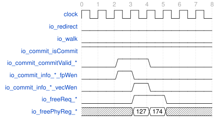
此图 は、命令コミットのタイミングを示しています。ここで、io_freeReq_ はあるパスの io_freeReq 信号を表し、io_freePhyReg_ は io_freeReq_* に対応するあるパスの io_freePhyReg 信号を表します。io_redirect と io_walk が両方ともローレベルの場合、io_freeReq がハイレベルであれば、StdFreeList は対応する io_freePhyReg を空きキューに追加します。
さらに、io_freeReq_ の前のサイクルで、Rename モジュールは RAB のコミット情報を渡して、アーキテクチャのデキューポインタ archHeadPtr を更新します。io_commit_isCommit と対応するチャネルの io_commit_commitValid_ 信号がハイレベルの場合、対応するチャネルの更新信号が有効であることを示します。このとき、対応するチャネルの io_commit_info_fpWen または io_commit_info_vecWen がハイレベルの場合、そのチャネルが archHeadPtr を 1 つインクリメントさせることを示します。k 個のチャネルが上記の条件を満たす場合、archHeadPtr は k だけインクリメントされます。
命令再リネームタイミング概略図
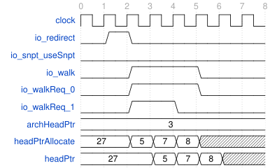
此图 は、命令の再リネームのタイミングを示しています。io_redirect が時刻 1 で 1 サイクルハイになった後、io_walk は数サイクルハイになり、モジュールが再リネーム段階に入ったことを示します。時刻 1 で、io_snpt_useSnpt がローレベルであるため、headPtr は archHeadPtr の値に復元されます。この復元はすぐには行われず、時刻 2 で io_walkReq_ のハイレベルの数（2）を加算して headPtrAllocate（5）を取得し、時刻 3 で headPtr に書き込まれます。その後、io_walk がハイレベルの場合、headPtrAllocate は headPtr+PopCount(io_walkReq_) の値に設定され、次のサイクルで headPtr に書き込まれます。
再リネームプロセスは、投機的実行の誤ったパス上のリネーム状態を排除することを目的としています。まず headPtr をアーキテクチャの archHeadPtr 状態（または io_snpt_useSnpt がハイレベルの場合はスナップショット状態）に復元し、その後、誤ったパスに入る前まで再リネームすることで、この目的を達成します。
主要回路：リングキュー
空き物理レジスタはリングキューによって管理されます。このリングキューは、レジスタグループ freeList（コード中の freeList_、その数を size とする）、およびヘッドポインタ headPtr（コード中の headPtr_）とテールポインタ tailPtr（コード中の tailPtr_*）で構成されます。ここで、headPtr はデキューポインタ、tailPtr はエンキューポインタです。
説明を簡単にするために、まず通常のキューを考えます。このとき、headPtr と tailPtr は両方とも freeList 内の要素を指すポインタです。通常動作時、tailPtr は常に headPtr 以上であり、キュー内の要素は {headPtr, headPtr + 1, ..., tailPtr - 1} です。要素をエンキューする場合、要素を freeList[tailPtr] に配置し、tailPtr を 1 つインクリメントします。要素をデキューする場合、freeList[headPtr] を取り出し、headPtr を 1 つインクリメントします。tailPtr と headPtr が等しい場合、キューは空です。tailPtr が headPtr より大きい場合、キューは空ではありません。
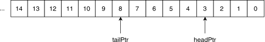
しかし、freeList は無限長ではないため、リングキューを設計しました。リングキューは、有限長の通常のキューを先頭と末尾でつなげたものと考えることができます。このとき、tailPtr と headPtr はもはや freeList 内の要素を指す単なるポインタではなくなります。元の設計では、tailPtr と headPtr が等しい場合、リングキューは空であるか、満杯である可能性があります。
この問題を解決するために、tailPtr と headPtr に flag フィールドを追加しました。このフィールドの初期値は false で、freeList[size - 1] から freeList[0] に変わるたびに flag を反転させます。これにより、value が同じ場合でも、flag が同じであればリングキューは空であり、flag が異なればリングキューは満杯であることがわかります。
canAllocate の更新タイミング：現在のサイクルで headPtr、tailPtr、freeReq、および allocateReq に基づいて freeRegCnt を計算し、それを 1 サイクル遅延させて freeRegCntReg を取得します（これが実際の size です）。freeRegCntReg がデコード幅より大きい場合、canAllocate はハイになり、そのサイクルで出力されます。
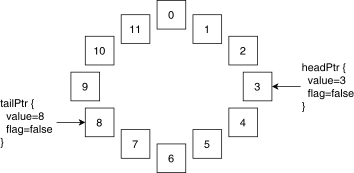
MEFreeList
MEFreeList は Rename モジュールで intFreeList としてインスタンス化されます。、、および で述べたように、intFreelist はリネーム時に整数物理レジスタの割り当て要求を受け取り、割り当てられた空き整数物理レジスタを返します。再リネーム時には RAB から渡される再リネーム要求に基づいて整数物理レジスタを再割り当てします。コミット時には、もはや使用されなくなった整数物理レジスタを解放します。StdFreeList とは異なり、MEFreeList は move 命令の削除をサポートしています。命令が move 命令の場合、Rename は io_allocateReq_*_valid をハイに設定しないため、MEFreeList はその命令に空き物理レジスタを割り当てません。
全体ブロック図
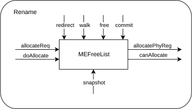
インターフェースタイミング
空きレジスタ割り当てタイミング概略図
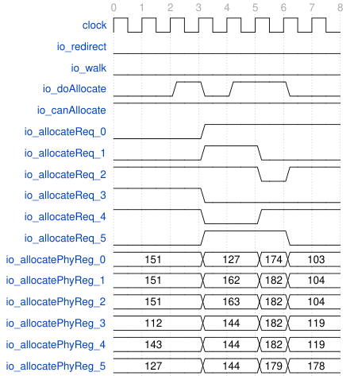
此图 は、空き物理レジスタ割り当てのタイミングを示しています。時刻 3、時刻 5、および時刻 6 で、io_redirect と io_walk はローレベル、io_doAllocate と io_canAllocate はハイレベルであり、空き物理レジスタの割り当てが行われました。時刻 3 で、io_allocateReq_[2-4] はハイレベルであり、MEFreeList は io_allocatePhyReg_[2-4] を介してそれぞれ割り当てられた空き物理レジスタ番号 151、112、および 143 を返しました。時刻 5 では、io_allocatePhyReg_[0-2|5] はそれぞれ割り当てられた空き物理レジスタ番号 127、162、163、および 144 を返しました。時刻 6 では、174、182、および 179 を返しました。
命令コミットタイミング概略図
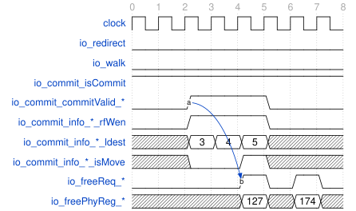
此图 は、命令コミットのタイミングを示しています。ここで、io_freeReq_ はあるパスの io_freeReq 信号を表し、io_freePhyReg_ は io_freeReq_* に対応するあるパスの io_freePhyReg 信号を表します。io_redirect と io_walk が両方ともローレベルの場合、io_freeReq がハイレベルであれば、StdFreeList は対応する io_freePhyReg を空きキューに追加します。
さらに、io_freeReq_ の 2 サイクル前に、Rename モジュールは RAB のコミット情報を渡して、アーキテクチャのデキューポインタ archHeadPtr を更新します。io_commit_isCommit と対応するチャネルの io_commit_commitValid_ 信号がハイレベルの場合、対応するチャネルの更新信号が有効であることを示します。このとき、対応するチャネルの io_commit_info_rfWen がハイレベル、io_commit_infoldest が 0 でなく、かつ io_commit_info*_isMove がローレベルの場合、そのチャネルが archHeadPtr を 1 つインクリメントさせることを示します。k 個のチャネルが上記の条件を満たす場合、archHeadPtr は k だけインクリメントされます。
io_commit_commitValid_ があるサイクルでハイレベルであっても、io_freeReq_ 信号が 2 サイクル後に必ずしもハイレベルになるとは限りません。この現象の原因は move 削除です。ここでの io_freeReq_* は RenameTable の出力信号 io_need_free に由来します。RenameTable モジュールで述べたように、RenameTable の io_need_free 信号は、arch_table に同じ物理レジスタが存在する場合、ハイにならない可能性があります。そして、move 削除によって異なる論理レジスタが同じ物理レジスタを共有することになり、その結果、RenameTable の異なる項目に同じ物理レジスタが存在することになります。
命令再リネームタイミング概略図

此图 は、命令の再リネームのタイミングを示しています。io_redirect が時刻 1 で 1 サイクルハイになった後、io_walk は数サイクルハイになり、モジュールが再リネーム段階に入ったことを示します。時刻 1 で、io_snpt_useSnpt がローレベルであるため、headPtr は archHeadPtr の値に復元されます。この復元はすぐには行われず、時刻 2 で io_walkReq_ のハイレベルの数（2）を加算して headPtrAllocate（5）を取得し、時刻 3 で headPtr に書き込まれます。その後、io_walk がハイレベルの場合、headPtrAllocate は headPtr+PopCount(io_walkReq_) の値に設定され、次のサイクルで headPtr に書き込まれます。
再リネームプロセスは、投機的実行の誤ったパス上のリネーム状態を排除することを目的としています。まず headPtr をアーキテクチャの archHeadPtr 状態（または io_snpt_useSnpt がハイレベルの場合はスナップショット状態）に復元し、その後、誤ったパスに入る前まで再リネームすることで、この目的を達成します。
CompressUnit
CompressUnit は、どの命令が同じ ROB エントリを共有できるか、つまり同じ ROB エントリに圧縮できるかを決定するために使用されます。このモジュールはデコードユニットからの出力を受け取り、デコード出力の結果に基づいて ROB 圧縮情報を取得します。
あるチャネルが ROB 圧縮可能（canCompress_[0-5]）としてマークされるのは、そのチャネルから渡されたデコード情報が次の条件を満たす場合のみです：そのチャネルのデコード情報が有効（io_in_[0-5]valid）、そのチャネルに命令融合がない（!io_in[0-5]bits_commitType[2]）、そのチャネルに命令分割がないか、または命令分割の最後のマイクロ命令である（io_in[0-5]bits_lastUop）、そのチャネルに例外がない（io_in[0-5]bits_exceptionVec* がすべてローレベル）、かつそのチャネルが ROB 圧縮可能としてマークされている（io_in_[0-5]_bits_canRobCompress）。
CompressUnit は、各チャネルに対して ROB エントリを割り当てる必要があるかどうかのフラグ io_out_needRobFlags_[0-5] を出力します。あるチャネルの canCompress_[0-5] が 0 であるか、またはそのチャネルが自身が属する連続して 1 である canCompress_[0-5] グループの中で最も番号の大きいチャネルである場合にのみ、そのチャネルの io_out_needRobFlags_[0-5] はハイレベルに設定されます。
CompressUnit は、各チャネルに対して、そのチャネルが属する ROB エントリ内の命令数 io_out_instrSizes_[0-5] を出力します。あるチャネルの canCompress_[0-5] が 0 の場合、そのチャネルの io_out_instrSizes_[0-5] は 1 です。あるチャネルの canCompress_[0-5] が 1 の場合、そのチャネルの io_out_instrSizes_[0-5] は、自身が属する連続して 1 である canCompress_[0-5] グループの要素数です。
CompressUnit は、各チャネルに対して、そのチャネルと同じ ROB エントリを共有するチャネルのマスク io_out_masks_[0-5] を出力します。この信号のビット幅は 6 で、チャネル数と同じです。あるチャネルの canCompress_n が 0 の場合、そのチャネルの io_out_masks_n[n] は 1 で、io_out_masks_n[n] 以外のビットは 0 です。あるチャネルの canCompress_n が 1 の場合、io_out_masks_n で 1 であるビットのインデックスは、「自身が属する連続して 1 である canCompress_[0-5] グループ」内のチャネルの番号です。
例えば、{canCompress_5, canCompress_4, canCompress_3, canCompress_2, canCompress_1, canCompress_0} == {1, 0, 0, 1, 1, 0} の場合、{io_out_needRobFlags_5, io_out_needRobFlags_4, io_out_needRobFlags_3, io_out_needRobFlags_2, io_out_needRobFlags_1, io_out_needRobFlags_0} == {1, 1, 1, 1, 0, 1}、{io_out_instrSizes_5, io_out_instrSizes_4, io_out_instrSizes_3, io_out_instrSizes_2, io_out_instrSizes_1, io_out_instrSizes_0} == {1, 1, 1, 2, 2, 1}、{io_out_masks_5, io_out_masks_4, io_out_masks_3, io_out_masks_2, io_out_masks_1, io_out_masks_0} == {{1, 0, 0, 0, 0, 0}, {0, 1, 0, 0, 0, 0}, {0, 0, 1, 0, 0, 0}, {0, 0, 0, 1, 1, 0}, {0, 0, 0, 1, 1, 0}, {0, 0, 0, 0, 0, 1}} となります。
全体ブロック図
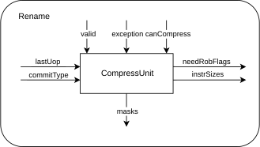
インターフェースタイミング
このモジュールは純粋な組み合わせロジックであり、信号はそのサイクルで入力され、そのサイクルで出力されます。
SnapshotGenerator
で述べたように、リネームスナップショットは分散しており、リダイレクトが発生した後に誤ったリネームパスの影響を排除する必要がある各モジュールに配置され、再リネームを高速化する目的を果たします。リネーム関連のモジュールについては、RenameTable、RenameTable_1、RenameTable_2、StdFreeList、および MEFreeList のすべてにこのサブモジュールが存在します。
異なるサブモジュールに具体的に保存されるスナップショットデータ snapshots はそれぞれ異なります。RenameTable(_*) については、それぞれ 4 つの spec_table が保存されています。StdFreeList と MEFreeList については、それぞれ 4 つの headPtr が保存されています。
モジュール内部では、リングポインタのペア snptEnqPtr と snptDeqPtr が維持されます。io_redirect がローレベルの場合、スナップショットストレージが満杯でなく、かつ io_enq がハイレベルであれば、モジュールは io_enqData_* から渡されたデータをスナップショットストレージ snapshots_[snptEnqPtr_value] に記録し、snptValids[snptEnqPtr_value] を 1 に設定してから snptEnqPtr を 1 つインクリメントします。
それに対して、io_redirect がローレベルの場合、io_deq がハイレベルであれば、スナップショットモジュールがスナップショットをデキューする必要があることを示します。このとき、snptValids_[snptDeqPtr_value] はローに設定され、その後 snptDrqPtr が 1 つインクリメントされます。
リダイレクト発生時、スナップショットモジュールは io_flushVec_ 信号に基づいて内部のスナップショットをフラッシュします。まず、io_flushVec_ がハイレベルの場合、対応するチャネルの snptValids_ はローに設定されます。次に、snptEnqPtr は、ローに設定された後の最初の snptValids_ がローである位置にロールバックされます。
スナップショットに保存されたデータは、io_snapshots_[0-3]_* インターフェースを介してモジュール外部に転送され、各モジュールがリダイレクト時に回復するために使用されます。リダイレクト時にスナップショットを使用するかどうか、およびどのスナップショットを使用するかは、CtrlBlock によって統一的に信号が生成され、このモジュールはスナップショットデータを提供するだけです。